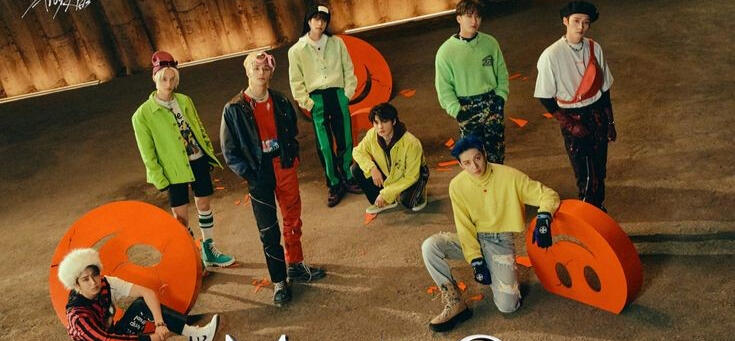

STRAY KIDS
Stray kids (스트레이 키즈 seuteulei kijeu 'SKZ') es un grupo masculino surcoreano bajo la empresa JYP Entertainment, su nombre viene del inglés y significa "niños perdidos" el cual representa que ellos están perdidos en el mundo y, juntos, tendrán que encontrar su lugar.
Los 8 miembros de esta agrupación fueron elegidos en un grupo de supervivencia del mismo nombre (Stray kids) en 2017 dónde cada uno de ellos fueron demostrando sus múltiples talentos para ganar.
El nombre de su fandom es 'STAY' Ya que eliminando la r en St(r)ay Kids esta significa "reason" (razón), por lo que STAY es la razón de que Stray Kids existe, de ahí su emblema "You Make Stray kids Stay".
En septiembre de 2017 JYP Entertainment anunció el nuevo reality show de la agencia para debutar una nueva boy band y antes del estreno del programa, el 6 de octubre, se lanzó el primer videoclip del grupo de la canción «Hellevator» la cual más tarde fue lanzada como sencillo digital.
DEBUT
FECHA DEBUT: 25 de marzo de 2018.
NOMBRE DEL FANDOM: STAY, anunciado el 1 de agosto de 2018.
MAS RECIENTE ÁLBUM: Mini álbum "Oddinary" 18 de marzo de 2022.
SIGUIENTE PROYECTO: Desconocido.
INFORMACIÓN
•Stray Kids ha tocado muchos temas sensibles, si de canciones y videos musicales se habla, por ejemplo, el dificíl proceso de la adolescencia, presión social, efecto placebo, represión de sentimientos, insomnio, depresión, depersonalización, indesición, etc.
•TODOS los integrantes son all rounders (saben hacer todo a la perfección) por eso mismo es que ninguno tiene una posición en específico, todos cantan, rapean, bailan, componen y escriben.
•Tres de los integrantes son quienes se encargan de la composición, letras, arreglos y producción de sus canciones, otros tres son los que se encargan de las coreografías, convirtiendo a stray kids en un grupo autoproducido.
RECORDS
•Son los primeros y únicos million seller en su empresa y el álbum más vendido en la cuarta generación de kpop.
•Son el cuarto grupo en instagram más seguido y el más seguido en su generación.
•Su sub-unidad de composición son los 3 idols de la cuarta generación con más canciones registradas bajo sus nombres.
•Único grupo de kpop con su propio género musical, llamado "malataste" sin mencionar que también son los pioneros de este asombroso género.
•Aproximadamente 4 miembros de skz están dentro del top 10 de los raperos más rápidos del kpop y uno de ellos se encuentra en el primer lugar.
FUN FACTS
•Dos integrantes nacieron y se criaron en Australia, uno se crió en Malasia y otros 2 vivieron unos meses en Estados Unidos.
•Seungmin y Changbin, desde antes de predebut ya tenían fans, en Internet puedes encontrar fancams de ambos aún sin si quiera haber debutado.
•Hubo un tiempo donde muchas stays (mayormente baby stays) pensaban que el famoso cantante "pitbull" era tío de Bangchan por una foto donde ambos salen juntos.
•Bangchan fue quien escogió a los integrantes del grupo,el primero que eligió fue a han, su amigo más cercano entre todos.
•El antes mencionando, Bangchan, es amigo muy cercano de muchas personas dentro de la agencia como, bambam, yugyeom y Jackson (GOT7), sana y momo (TWICE), Young k (Day6) shownu (MONSTA X), etc.
CUENTAS PARA SEGUIR
Bangchan,Lee Know,Changbin,Hyunjin,Han,Felix,Seungmin,I.N:cuentas dedicadas a retwittear, traducir y publicar scans, photoshoots, restocks, votaciones, stream party y actualizaciones de cada integrante individualmente.
Stay Voting Zone:Cuenta dedicada principalmente a subir cualquier votación segura y confiable sobre los chicos.
Stray kids chart data:Sube cualquier información sobre los chicos, votaciones importantes, stream party's, proyectos, dónde comprar las canciones y cuenta con carrds.
Realstraykids:Cuenta de instagram oficial Stray Kids donde estan constantemente activos subiendo fotos de su día a día.
Straykids_official_jp:Cuenta Stray Kids oficial Japón(JYP).
Por ultimo, siganme en mi ig. y tww. que aparecen en la parte de abajo o los doxeo :b.